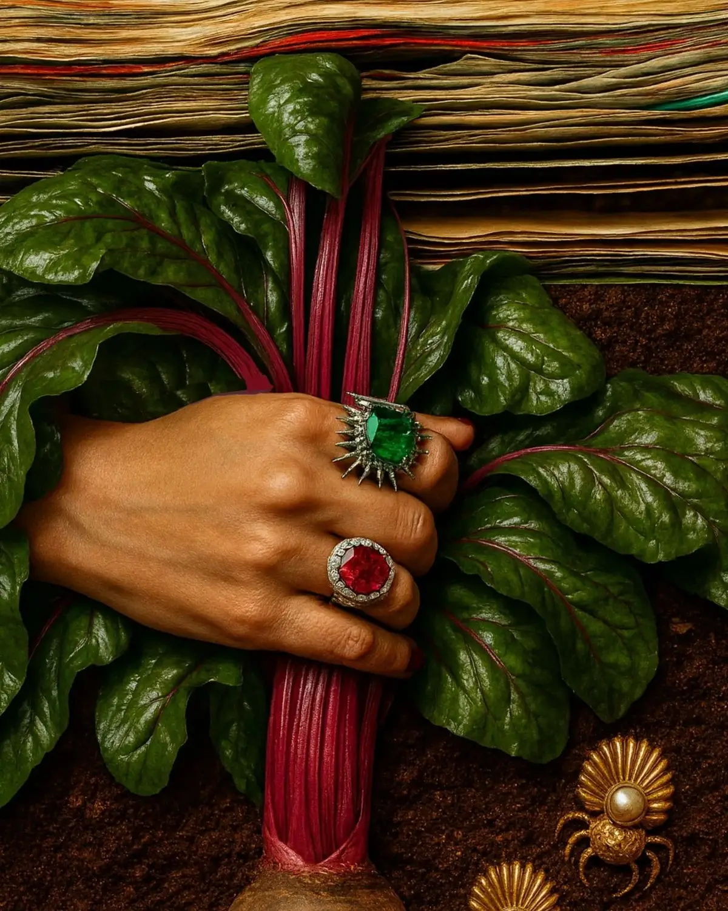

<meta charset="utf-8">
<meta name="viewport" content="width=device-width, initial-scale=1">
<title>Big Feelings — EATURMOOD</title>
<link rel="preconnect" href="https://fonts.googleapis.com">
<link rel="preconnect" href="https://fonts.gstatic.com" crossorigin>
<link href="https://fonts.googleapis.com/css2?family=Bodoni+Moda:ital,opsz,wght@0,6..96,400;0,6..96,500;1,6..96,400;1,6..96,500&family=Jost:wght@300;400;500;600;700&display=swap" rel="stylesheet">
<style>
:root{
  --cream:#F7F0E2; --gold:#C4974A; --margin:clamp(20px,6vw,110px);
  --ground:#3D291E; --ink:#E2D9CD;
}
*{box-sizing:border-box;margin:0;padding:0}
html{scroll-behavior:smooth}
body{background:var(--ground);color:var(--ink);
  font-family:"Jost",system-ui,sans-serif;overflow-x:hidden;
  transition:background-color 1400ms cubic-bezier(.4,0,.2,1)}
img{display:block;max-width:100%}
h1,h2{font-family:"Bodoni Moda",serif;font-weight:400}

/* ---------- fixed chrome ---------- */
.top{position:fixed;top:0;left:0;right:0;z-index:40;display:flex;
  justify-content:space-between;align-items:center;gap:1em;padding:18px var(--margin);
  font-size:10.5px;letter-spacing:.16em;text-transform:uppercase;
  color:var(--chrome,rgba(255,246,232,.62));mix-blend-mode:normal;
  transition:color 900ms ease}
.top a{color:inherit;text-decoration:none}
.top a:hover{color:var(--gold)}

/* ---------- opening ---------- */
.open{position:relative;min-height:100svh;display:grid;place-items:center;
  overflow:hidden;background:#2A1C13}
.open img{position:absolute;inset:0;width:100%;height:100%;object-fit:cover;
  transform:scale(1.04);animation:settle 9s cubic-bezier(.22,1,.36,1) forwards}
@keyframes settle{to{transform:scale(1)}}
.open::after{content:"";position:absolute;inset:0;
  background:
    radial-gradient(58% 34% at 50% 47%,rgba(8,4,3,.82) 0%,rgba(8,4,3,.62) 55%,rgba(8,4,3,0) 100%),
    radial-gradient(120% 88% at 50% 45%,rgba(8,4,3,.18) 24%,rgba(8,4,3,.7) 74%,rgba(8,4,3,.94) 100%),
    linear-gradient(180deg,rgba(8,4,3,.55) 0%,rgba(8,4,3,0) 22%,rgba(8,4,3,0) 76%,rgba(8,4,3,.6) 100%)}
.open .plate{position:relative;z-index:2;text-align:center;padding:0 var(--margin)}
.open .eyebrow{font-size:11px;letter-spacing:.34em;text-transform:uppercase;
  color:#DFB670;margin-bottom:1.1em;text-shadow:0 2px 18px rgba(0,0,0,.9)}
.open h1{font-style:italic;font-weight:500;color:#F4EADA;
  font-size:clamp(44px,9vw,116px);line-height:.94;
  text-shadow:0 4px 44px rgba(0,0,0,.8)}
.open .sub{margin-top:1.4em;font-size:12px;letter-spacing:.2em;text-transform:uppercase;
  color:rgba(244,234,218,.72);text-shadow:0 2px 18px rgba(0,0,0,.9)}
.scrollcue{position:absolute;left:50%;bottom:34px;translate:-50% 0;z-index:2;
  font-size:10px;letter-spacing:.24em;text-transform:uppercase;
  color:rgba(244,234,218,.45);animation:breathe 3.6s ease-in-out infinite}
@keyframes breathe{0%,100%{opacity:.35;transform:translateY(0)}50%{opacity:.85;transform:translateY(4px)}}

/* ---------- a poem ---------- */
.poem{min-height:100svh;display:grid;place-items:center;
  padding:clamp(90px,14vh,150px) var(--margin) clamp(70px,11vh,120px)}
.sheet{width:min(100%,660px);text-align:center;
  opacity:0;transform:translateY(26px);
  transition:opacity 1500ms ease,transform 1600ms cubic-bezier(.22,1,.36,1)}
.sheet.on{opacity:1;transform:none}
.sheet h2{font-size:clamp(24px,3.6vw,38px);margin-bottom:1.5em;color:var(--tone)}
.verse{font-family:"Bodoni Moda",serif;font-weight:400;color:var(--tone);
  font-size:clamp(19px,2.9vw,31px);line-height:1.48}
.verse p+p{margin-top:1.5em}
.mark{margin-top:3.4em;font-family:"Bodoni Moda",serif;font-style:italic;
  font-size:13px;letter-spacing:.02em;color:color-mix(in srgb,var(--tone) 62%,transparent)}

/* the long one, told in the third person — set smaller so it breathes */
.sheet.long{width:min(100%,760px)}
.sheet.long .verse{font-size:clamp(15px,2.05vw,22px);line-height:1.62}
.sheet.long .verse p+p{margin-top:1.35em}

/* the one poem that signs itself in block letters */
.stamp{margin-top:3.2em;display:grid;grid-template-columns:auto auto;
  justify-content:start;justify-items:start;gap:.06em clamp(.8em,4vw,1.9em);text-align:left;
  font-family:"Jost",system-ui,sans-serif;font-weight:700;
  font-size:clamp(38px,8.4vw,86px);line-height:.95;letter-spacing:-.01em;
  color:#D4462A}

/* ---------- footer ---------- */
.foot{display:flex;justify-content:space-between;gap:1.2em;flex-wrap:wrap;
  padding:26px var(--margin) 40px;background:#2A1C13;
  font-size:10.5px;letter-spacing:.14em;text-transform:uppercase;
  color:rgba(255,246,232,.5);border-top:1px solid rgba(255,246,232,.1)}
.foot a{color:inherit;text-decoration:none}
.foot a:hover{color:var(--gold)}

@media (prefers-reduced-motion:reduce){
  html{scroll-behavior:auto}
  *{animation:none!important;transition-duration:1ms!important}
  .sheet{opacity:1;transform:none}
}

@media (max-width:820px){
  .logo,.tray,.coupe,.note,.drift,.obj .drift{animation:none!important}
}
@media (prefers-reduced-motion:reduce){*{animation:none!important}}
</style>

<header class="top">
  <a href="index.html">&larr; The tray</a>
  <span>EatUrMood &middot; Big Feelings</span>
</header>

<section class="open" data-ground="#2A1C13">
  
  <div class="plate">
    <p class="eyebrow">Poems</p>
    <h1>Big&nbsp;Feelings</h1>
    <p class="sub">Sallie Townsend</p>
  </div>
  <span class="scrollcue">Keep going</span>
</section>

<section class="poem" data-ground="#3D291E" style="--tone:#E2D9CD">
  <article class="sheet">
    <h2>Dirty Pages</h2>
    <div class="verse">
      <p>Sometimes all you can do is<br>
      write about it.<br>
      The memory and misery,<br>
      limerence and lingering.<br>
      Yearning and figuring,<br>
      all that was entering.<br>
      Remembering and de-centering,<br>
      a soil no longer fertile.<br>
      There is dirt on these pages,<br>
      please excuse my garden.<br>
      Forgive me for digging,<br>
      I don&rsquo;t want to harden.</p>
    </div>
    <p class="mark">@eaturmood</p>
  </article>
</section>

<section class="poem" data-ground="#5D1104" style="--tone:#C63A22">
  <article class="sheet">
    <div class="verse">
      <p>How&rsquo;d we let it grow to this?<br>
      You with her<br>
      Me a mess<br>
      Happiness suits you and I&rsquo;m sure<br>
      your laughter is still glorious.<br>
      I miss the boring<br>
      The reruns and grocery restocking<br>
      Naps and big meals<br>
      Games and bad movies<br>
      How&rsquo;d we let it grow to this?<br>
      You with her<br>
      Me in abyss<br>
      Shaping a forgotten novel<br>
      I believe them now&mdash;</p>
    </div>
    <div class="stamp"><span>Love</span><span>Is</span><span>Awful</span></div>
  </article>
</section>

<section class="poem" data-ground="#4A1108" style="--tone:#C0402A">
  <article class="sheet">
    <div class="verse">
      <p>How could it be temporary?</p>
      <p>A love that can dig and bleed..<br>
      Get planted like a seed,<br>
      dug in real deep and buried<br>
      underneath.<br>
      How temporary could it be?<br>
      I will level out your fees.<br>
      Laughs and tease<br>
      while you pass me the keys.</p>
      <p>How temporary could it be?</p>
    </div>
    <p class="mark">@eaturmood</p>
  </article>
</section>

<section class="poem" data-ground="#4E2439" style="--tone:#F0E6DA">
  <article class="sheet long">
    <div class="verse">
      <p>The sound of tin foil reminds Townsend of a happy childhood.</p>

      <p>The oven set to 350&hellip; A single mother, doing her best.<br>
      Their best years carried smells of ashes and waxed vanilla.<br>
      Sounds of screen doors, cats and crickets.<br>
      Bike pedals next to trampoline metals.<br>
      Townsend&rsquo;s mother lived in a safe enough neighborhood.<br>
      Things only felt limited when you needed AC.</p>

      <p>After a round of bad luck, and months of high-jacked cable,<br>
      she watched her mother&rsquo;s favorite meal come a compact rock.<br>
      The oven stayed cold and dinner was a plate of chocolate syrup.<br>
      Her mother would use her fingers as utensils and tell Townsend<br>
      about a culture that only ate with their hands.<br>
      She seemed well traveled for someone<br>
      chained to the inside of their mind.</p>

      <p>It&rsquo;s been over a decade since Townsend looked at her mother.<br>
      Townsend had to forget the woman who set the oven to 350.<br>
      Dialing the oven to 345 to avoid any chance of<br>
      inheriting the same fate.</p>

      <p>She replayed the Friday her mother lost her mind.<br>
      Fearing the sound of crushed bones and stones.<br>
      Townsend erased the driveway of bike tires and<br>
      replaced the memory with a pile of teeth.</p>

      <p>What would life be like to have collected<br>
      thoughts and solid pieces of her mother?</p>

      <p>A life where tinfoil was just fucking tinfoil.</p>
    </div>
    <p class="mark">@eaturmood</p>
  </article>
</section>

<section class="poem" data-ground="#C4BD78" data-chrome="rgba(60,48,28,.72)" style="--tone:#53442B">
  <article class="sheet">
    <div class="verse">
      <p>Old oak tree,<br>
      do you remember me?</p>
      <p>I&rsquo;ve been with the willows,<br>
      learning how to bend,<br>
      wallowing in the wind.</p>
      <p>How much time does it take,<br>
      to soften in your shade?</p>
      <p>Are there rules or fees<br>
      to getting off my knees?<br>
      Is standing what happens<br>
      when I stop asking?</p>
      <p>You stay.<br>
      I practice doing the same.</p>
    </div>
    <p class="mark">@eaturmood</p>
  </article>
</section>

<footer class="foot">
  <span>Sallie Townsend &copy; 2026</span>
  <span><a href="index.html">Tray</a> &nbsp;&middot;&nbsp; <a href="styling.html">Interior Staging</a> &nbsp;&middot;&nbsp; <a href="products.html">Products</a> &nbsp;&middot;&nbsp; <a href="eaturmood-services_3.html">Services</a> &nbsp;&middot;&nbsp; <a href="about.html">About Me</a></span>
  <span><a href="mailto:hello@eaturmood.com">hello@eaturmood.com</a></span>
</footer>

<script>
/* the page takes on the colour of whatever you are reading */
const panels = document.querySelectorAll('[data-ground]');
const ground = new IntersectionObserver(es => {
  es.forEach(e => {
    if (e.isIntersecting) {
      document.body.style.setProperty('--ground', e.target.dataset.ground);
      document.body.style.setProperty('--chrome', e.target.dataset.chrome || 'rgba(255,246,232,.62)');
    }
  });
}, {threshold:.5});
panels.forEach(p => ground.observe(p));

/* each poem settles in as it arrives */
const rise = new IntersectionObserver(es => {
  es.forEach(e => { if (e.isIntersecting) e.target.classList.add('on'); });
}, {threshold:.25});
document.querySelectorAll('.sheet').forEach(s => rise.observe(s));
</script>
